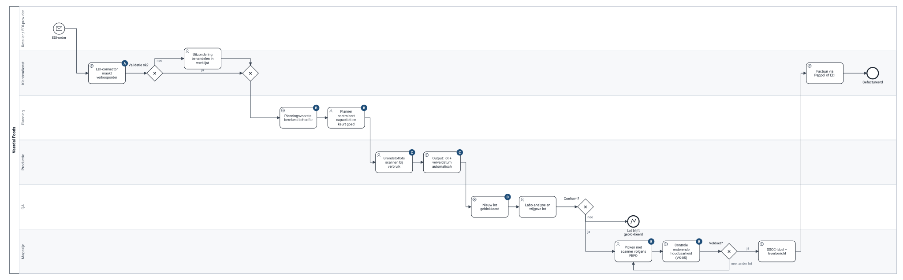

← Terug naar de case · acht slides, tien minuten · PDF · sprekersnotities
Portfoliocase · fictieve organisatie
Van SAP naar Business Central bij een voedingsproducent
Een ERP-migratie geleid vanuit de klant: partnerkeuze, fit-gap, datamigratie, go/no-go en uitrol.
1 · Het probleem
SAP stopt, de seizoenen niet
- SAP ECC verliest zijn standaardonderhoud; de enige SAP-ontwikkelaar stopt.
- Planning in Excel, traceerbaarheid op papier, vrijgave per mail.
- Soep van oktober tot februari, BBQ-sauzen vanaf april: er is geen rustig moment.
Medewerkers185
Recall-oefening vandaag220 min
Budget€865.950
2 · Hoe ik begon
Niet met software, met de partner en het proces
- Criteria en gewichten vastgelegd vóór de offertes; prijs weegt 15%.
- Elke partner dezelfde demo op ons script, tot en met een recall.
- Zes workshops, telkens vertrekkend van een echt document van vorige week.
Partner A3,75
Partner B3,55
Prijs moet wegen boven40%
3 · Wat ik ontwierp
Lots en vervaldatums als ruggengraat

4 · Standaard eerst
Van 146 maatwerkobjecten naar 2 extensies
Eisen41
Standaard of configuratie74%
Extensies2
Afgewezen CR's€48.700
- Elke eis: klasse, oplossing, dagen, beslisser bij het bedrijf, UAT-scenario.
- Extensies gaan altijd naar de stuurgroep: houdbaarheid per klant en allergenen, beide verplicht.
5 · De datamigratie
Zelfde aantal fouten, andere lots
- 15 kwaliteitsregels, elk met een eigenaar in de business; vier proefmigraties.
- Generale repetitie: 107 lots halffabricaat zonder vervaldatum, allemaal nieuw.
- Oorzaak: een eigen SAP-transactie. Opschonen zonder de bron te herstellen is dweilen met de kraan open.
Mock recall96,7%
Blokkerende fouten107
Voorraadverschil2,131%
6 · De beslissing
No-go op 1 maart, go op 1 april
- Criteria vastgelegd in week 16; een hard criterium wordt niet kwijtgescholden.
- Vier opties met kost en risico op één pagina; advies: vier weken uitstel.
- De stuurgroep besliste. Kost €55.700 uit de reserve, €23.550 bleef over.
Go/no-go 1 · W25NO-GO
Go/no-go 2 · W29GO
Recall na herstel100,0%
7 · Wat dit zegt over mij
Ik bescherm de go-live, niet de datum
- Ik werk vanuit de business: proceseigenaars beslissen, key users testen hun eigen werk.
- Ik stuur een partner met afspraken die op voorhand vastliggen: acceptatie, change, reserve.
- Ik maak slecht nieuws concreet: welke oorzaak, welke opties, wat het kost.